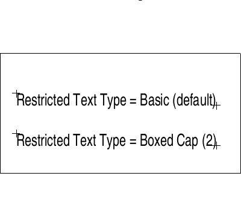

| Source image | Reference image |
|---|---|
 |
This test uses the ACI file to modify the default (Basic) restricted text type. The CGM file displayed on the left contains 2 restricted text elements. The text at the top is defaulted and the other at the bottom is explicitly set to Boxed-Cap. The image on the right shows the CGM rendered with the Metafile default. The CGM should have default restricted text type set to Boxed-Cap thus making both Restricted Text elements Boxed-Cap.